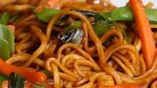

Noodles

Description:
This is a very popular meal, found in all across the world
Even anime such as Naruto has a lot of references to ramen noodles
Ingredients:
- 2 tablespoons vegetable oil
- 5 cloves garlic, minced
- 4 green onions, sliced, divided
- 2 carrots, cut into matchsticks
- 1 cup snap peas
- 2 tablespoons brown sugar
- 3 tablespoons soy sauce
- 9 oz dried rice noodles, cooked
Steps:
- Heat vegetable oil and and garlic and 3 green onions
- Cook for 2-3 mins
- Add the noodles and toss for a couple of minutes, until the noodles are well-coated and the vegetables are tender.
- Enjoy